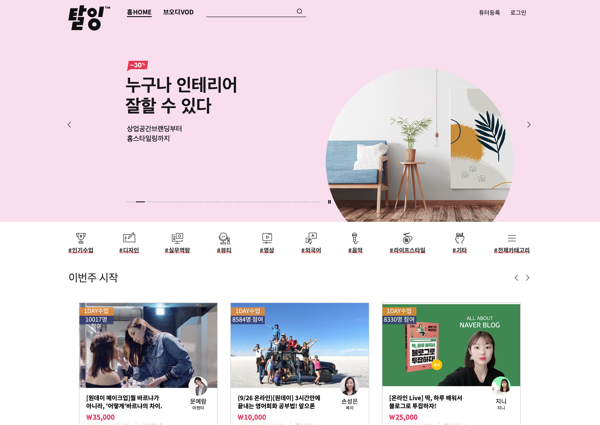
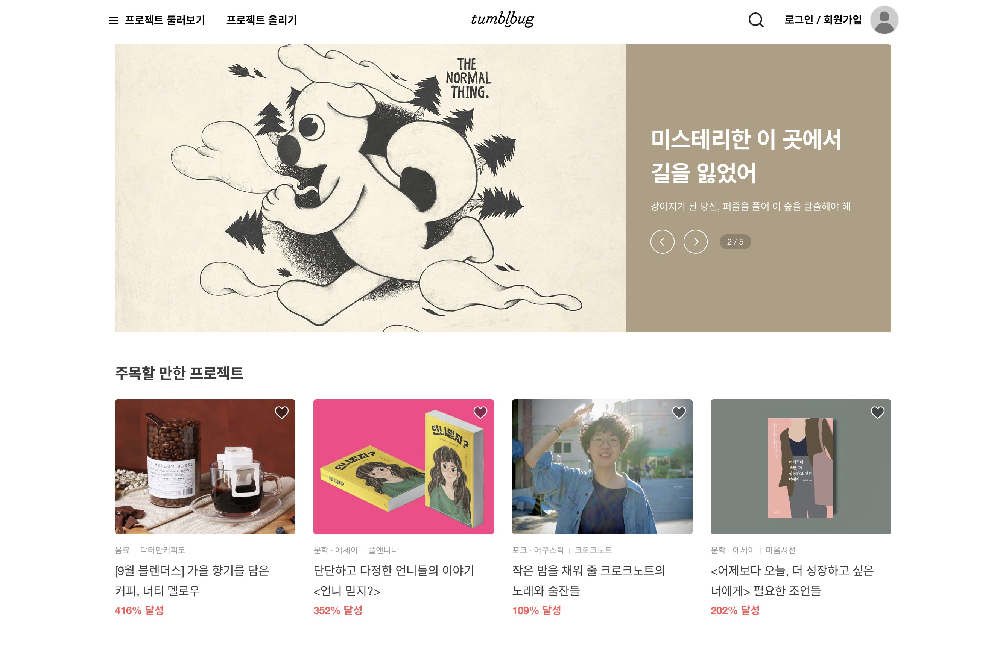
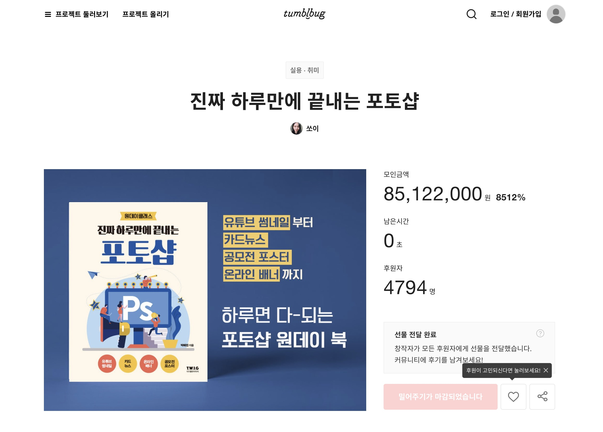
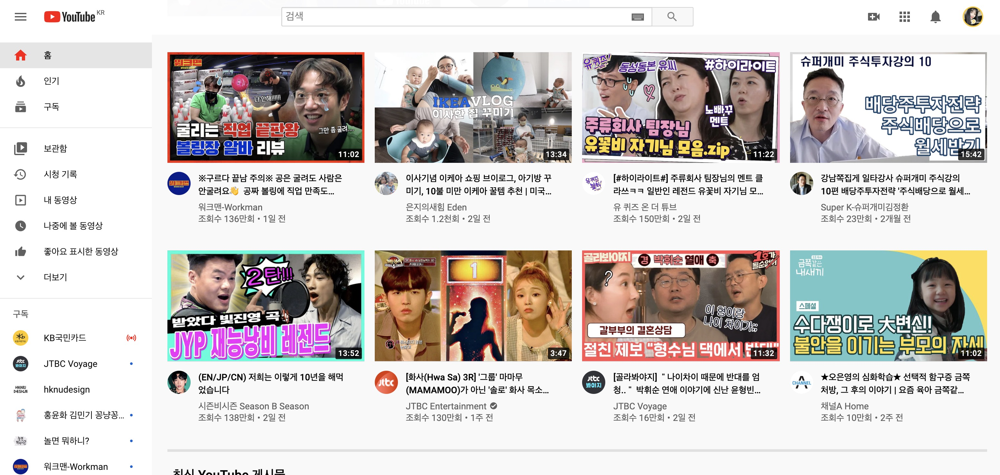
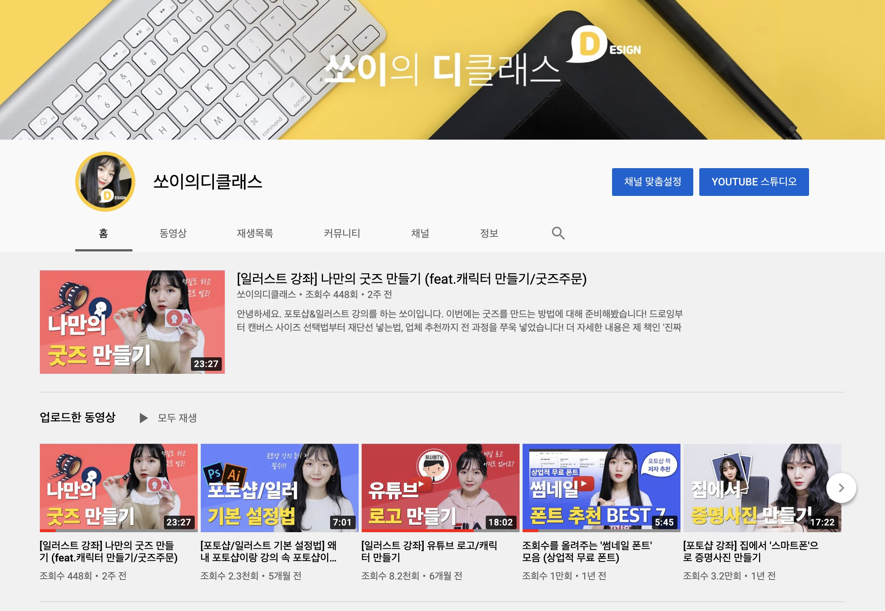

1
재능 공유(강의)
" 다른 사람에게 내 재능 알려주고 돈 받자 "
재능 공유 투잡은 내가 가지고있는 재능을 다른 사람에게 공유하며 가치를 창출하는 투잡입니다. 영상편집, 엑셀, 피피티 등 툴 사용법부터 드로잉, 영어, 스마트폰 사진촬영, 자소서 쓰는법 등 자신만의 꿀팁이나 재능까지 다양한 재능들을 강의 형태로 공유하며 수익을 얻을 수 있는 투잡입니다. 1:1 형식으로 과외처럼 진행할 수도 있고, 3:1 등 소규모 그룹 과외처럼 진행할 수도, 20~30명 규모의 사람들과 강의 형식으로 진행할 수도 있습니다. 탈잉이 처음 오프라인 재능공유 플랫폼으로 성장한 뒤, 현재는 클래스101이라는 온라인 재능공유 플랫폼이 크게 자리잡아 오프라인 형식이 아닌 온라인으로도 누구든지 재능 공유를 통해 돈을 벌 수 있게 되었습니다.
재능 공유 플랫폼으로는
탈잉 https://taling.me
크몽 https://kmong.com
숨고 https://soomgo.com
클래스101 https://class101.net
등이 있습니다.
IN MY CASE,
실제로 저는 탈잉이라는 플랫폼에서 4년째 포토샵, 그림 등을 가르치며 수익을 얻고 있습니다. 대학교 2학년 말에 처음 시작해 1:1 강의에서 현재는 9:1 강의로 규모를 늘려 수익을 얻고 있습니다. 시간당 1~2만원으로 과외와 비슷한 가격으로, 일반 포토샵 학원보다 인원은 적게 가격은 낮춰 제 수준에서 가르칠 수 있는 것들을 가르치며 수익을 얻고 있습니다.
2
PDF판매
" 시간도 없고 누군가를 가르치는게 부담스럽다면 "
PDF판매는 재능 공유와 비슷하게 자신의 재능, 꿀팁, 노하우 등을 통해 수익을 얻는 투잡입니다. 그러나 재능 공유 투잡과는 다르게 직접 대면하지 않고 문서 형식으로 수익을 얻는 투잡 방법입니다. 크몽, 탈잉, 텀블벅, 퍼블리, 오투잡 등에서 판매가 가능합니다.
IN MY CASE,
저는 디자이너로 일하며 생긴 간단한 디자인 꿀팁들을 엮어 텀블벅 및 탈잉, 크몽 등에서 PDF를 판매하고 있습니다.
3
크라우드 펀딩
" 아이디어는 있는데 자본이 없다면? "
크라우드 펀딩은 실제 제품을 양산하기 전 아이디어를 공유해 해당 아이디어를 필요로하는 일반 사용자들에게 출시에 필요한 금액을 미리 모금받은 뒤, 해당 금액으로 아이디어를 실현할 수 있게 하는 자금 모금 방식입니다. 아이디어만 있다면 누구나 시작이 가능합니다. 초기에는 아이디어 단계의 사업 자금 모금 수단으로 많이 사용했으나 요즘에는 간단한 아이디어로 펀딩을해 투잡으로서 크라우드 펀딩을 진행하는 사람들이 늘고 있습니다. 아이디어 상품, 책, 일러스트(그림), 다이어리나 스티커 등 디자인 굿즈, 디자인팁, 의류나 소품 등 다양한 분야의 펀딩이 진행중입니다.
대표적인 크라우드 펀딩 사이트로는
와디즈 https://www.wadiz.kr/
텀블벅 https://tumblbug.com
등이 있습니다.
IN MY CASE,
저는 ‘진짜 하루만에 끝내는 포토샵', ‘진짜 하루만에 끝내는 일러스트'라는 포토샵, 일러스트 서적을 출판사와 함께 크라우드 펀딩을 진행해 최조 모금을 진행했고 이후 일반 서점에 정식 출간한 적이 있습니다. 또, 앞서 소개 드렸던 디자인 꿀팁 PDF자료를 펀딩을 통해 최조 공개했고 펀딩 이후 크몽이나 탈잉에 공개해 판매하면서 수익을 얻고 있습니다.
4
영상 크리에이터(유튜버)
" 보기만 하지말고 이젠 나도 유튜버 "
많은 분들이 알고 또 원하고 계실 투잡, 영상 크리에이터(유튜버)입니다. 유튜브 크리에이터는 영상을 통해 일상이나 꿀팁 등 다양한 콘텐츠를 공유하며 수익을 얻을 수 있는 투잡입니다. 수익으로 이어지기까지 시간이 걸리나, 한 번 진입장벽을 넘으면 별다른 활동을 하지 않더라도 지속적으로 어느정도의 수익을 얻을 수 있는 투잡입니다. 요즘에는 직장인 등 일반인들도 자신의 일상을 공유하는 브이로그나 자신만의 특기를 살린 꿀팁 채널 (요리, 주식, IT기기 리뷰 등)을 개설해 공유하고 있습니다.
한 번 영상을 만들어 두면 유튜브 외에도
네이버TV https://tv.naver.com/
카카오TV https://tv.kakao.com/
등의 채널에 함께 게재해 수익을 얻을 수 있습니다.
IN MY CASE,
저는 포토샵을 강의하던 경력을 살려 포토샵 및 디자인 유튜브를 개설해 영상을 업로드하고 있습니다. 아직 크게 수익이 나는 것은 아니지만 별다른 행위를 하지 않음에도 지속적으로 작은 수익을 얻을 수 있는 것에 메리트를 느끼고 있습니다. 더불어 여러 사람들에게 노출되는 만큼 유튜브를 통해 다양한 기회들을 제안 받고 있습니다.
